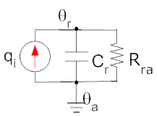
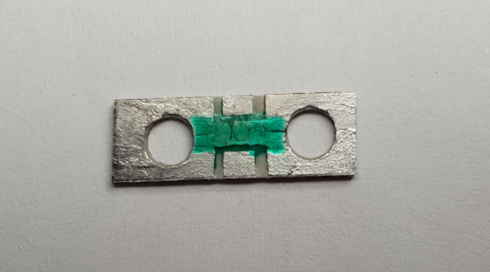
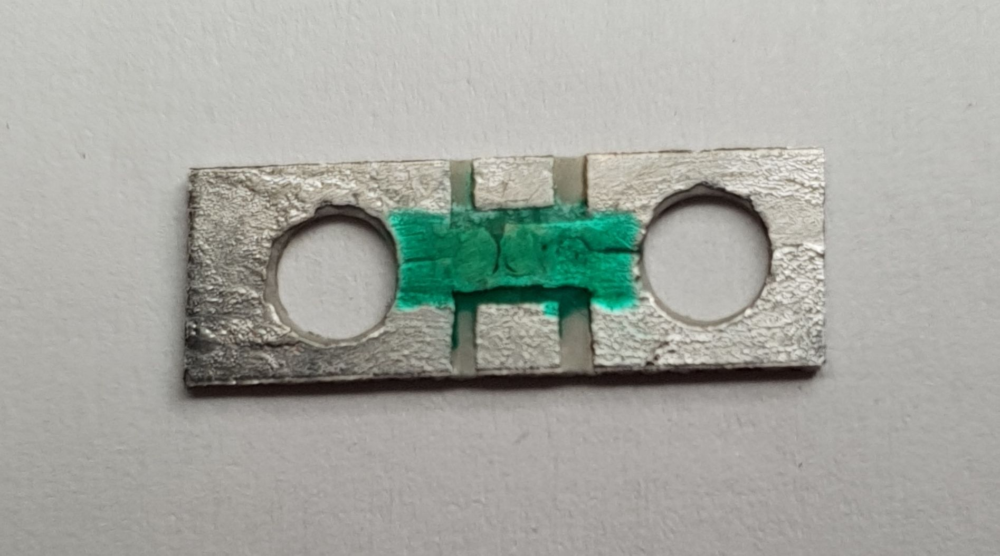
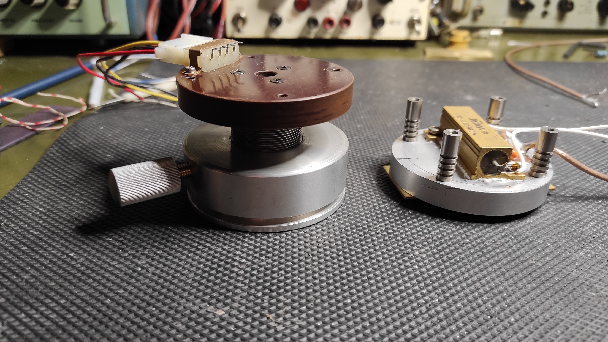
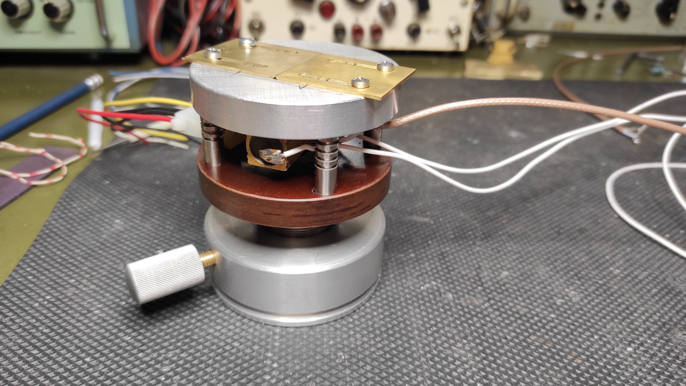

Heating stage
Introduction
Rationale
The wedge-bonding procedure requires the chip to be placed on a heated bed as it was anticipated in the project overview. The heated bed needs to be at a temperature of 150°C for the wedge-bonding procedure to be performed efficiently and correctly.
The thermal model
It is well known that thermal systems can be modeled using electrical equivalents by following these rules:
- Heat current is equivalent to electrical current;
- Temperature is equivalent to voltage;
- Ambient temperature is equivalent to electrical ground;
- Heat conduction of materials is equivalent to resistance;
- Heat capacity of materials is equivalent to electrical capacitance.
Driving the heating stage
Strategy
 By applying the previous observations, the machine's heated bed can be modeled as an RC network like the one in the figure on the right.
- \(q_i\) is the power generator. In our application, \(q_i\) will be the electrical power \(V(t) \times I(t)\) dissipated by a power resistor, which will act as a heating element;
- \(\theta_a\) is the ambient temperature;
- \(\theta_r\) is the temperature of the heated bed. Note that, obviously, \(\theta_r > \theta_a\) when the heating circuit is powered up;
- \(C_r\) is the heat capacity of the heated bed. This capacity has a significant magnitude, because the heated bed is essentially a fat disk of metal (see pictures down below);
- \(R_{ra}\) is the heat thermal resistance of the heated bed. It discharges the heat capacity, allowing for the heated bed to cool down back to \(\theta_r = \theta_a\) when the power source is turned off.
- Modulate the power source by switching it on and off at will;
- Measure the temperature of the heated bed \(\theta_r\);
- Regulate the temperature with a negative feedback loop.
The heated bed, the heating element and the temperature sensors are shown in the image cluster below:s
- Top-left: the mounting support for the SMD NTC temperature sensor;
- Top-right: the NTC and its support mounted on the underside of the heated bed;
- Bottom-left: the disassembled heated bed;
- Bottom-right: the assembled heated bed.




The driver
[TODO] Schematics e foto del driver.